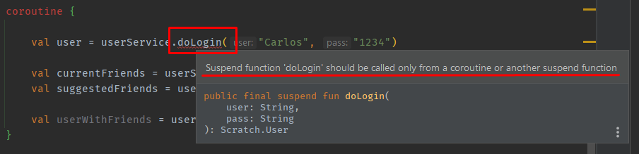
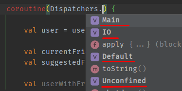
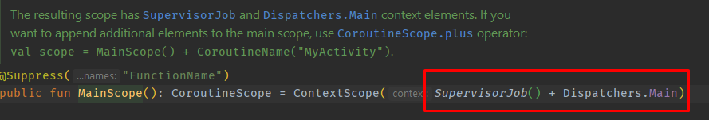

What are coroutines and what problem do they solve?
Coroutines are one of the most interesting features of Kotlin, which is why we have dedicated a separate topic to them.
Coroutines allow us to execute asynchronous functionality in an efficient way.
Before seeing how to implement them, let's see, in addition to the asynchrony, that they will solve the problems.
Let's imagine that we have a UserService class that is responsible for making a user connection.
For this we have on the one hand the data class User that could have the following aspect.
The LoginService class will have the following functions:
doLogin
requestCurrentFriends
requestSuggestedFriends
class UserService{//Given a username and pass, it retrieves a userfundoLogin(user:String, pass:String):User{//Request user, accessing a DataBase or remote APIreturnUser("Carlos")}//Given a user, it retrieves a list of Users which are current friendsfunrequestCurrentFriends(user:User): List<User>{//Request current friends, accessing a DataBase or remote APIreturnlistOf(User("John"),User("Anna"))}//Given a user, it retrieves a list of Users which are suggested friendsfunrequestSuggestedFriends(user:User): List<User>{//Request suggested friends, accessing a DataBase or remote APIreturnlistOf(User("Jane"),User("Mike"))}}
To use it we would do something like this:
val userService =UserService()val user = userService.doLogin("Carlos","1234")val currentFriends = userService.requestCurrentFriends(user)val suggestedFriends = userService.requestSuggestedFriends(user)val userWithFriends = user.copy(friends = currentFriends + suggestedFriends)
The above code would be the most logical and intuitive we could do, retrieve the user, and with that user retrieve their friends list to add them to the user.
But this code has a couple of problems.
First, if we execute the code in the main thread, since these requests can be expensive, we could block the main thread and therefore the UI,
which is a very bad idea.
The second is that in order to receive the suggested friends, the current friends must first arrive, which in this case is also a waste of time.
To solve the first problem, a possible solution would be to use background tasks or threads.
But... how do we know when the user has been retrieveed to make the friend request?.
A solution to this problem would be to make use of callbacks. Let's see how we would implement it.
In each method we would use a callback that we would call when the request has been resolved.
class UserService{//Given a username and pass, it retrieves a userfundoLogin(user:String, pass:String, callback:(User)->Unit){//Request user, accessing a DataBase or remote APIcallback(User("Carlos"))}//Given a user, it retrieves a list of Users which are current friendsfunrequestCurrentFriends(user:User, callback:(List<User>)->Unit){//Request current friends, accessing a DataBase or remote APIcallback(listOf(User("John"),User("Anna")))}//Given a user, it retrieves a list of Users which are suggested friendsfunrequestSuggestedFriends(user:User, callback:(List<User>)->Unit){//Request suggested friends, accessing a DataBase or remote APIcallback(listOf(User("Jane"),User("Mike")))}}
Now to use these calls we could use lambdas and call a method when the response from the previous one arrives.
val userService =UserService()
userService.doLogin(user="Carlos", pass ="1234"){ user ->//That's the user we retrieve
userService.requestCurrentFriends(user){ currentFriends ->
userService.requestSuggestedFriends(user){ suggestedFriends ->val userWithFriends = user.copy(friends = currentFriends + suggestedFriends)}}}
The problem with the code above is that if we have many functions that depend on the result of the previous one,
we can create a callback hell (multiple nested callbacks), which is not a desirable situation either.
With coroutines we can solve all these problems, use functions that are executed in threads other than the main one, and make code cleaner and easier to maintain.
But what are coroutines?, they could be defined as microthreads or light threads that allow us to write asynchronous code but sequentially, without using callbacks,
that is, instructions that appear sequential. The result of one line can be used in the next, avoiding callback hell.
Also, multiple coroutines can be run on the same thread. Threads are managed efficiently to spread the work.
While the threads that can be executed in an application are limited, the number of coroutines can be almost unlimited.
Coroutines are based on the idea of suspend functions. These are functions that can suspend the execution of a coroutine at a given point,
and once that suspend function has finished, it informs the coroutine so it can continue executing where it left off.
Coroutines are the safe place where suspend functions can be executed without normally blocking the current thread of execution.
Suspend Functions
As we have said, the suspend functions are the ones that will allow us to suspend the execution of the current
coroutine to carry out its action, and once finished, return to the state where the coroutine left off to continue its execution with the
result of the available function.
We can make any function suspended by simply adding the keyword suspend in front of fun . So we would do something like this in our example.
class UserService{//Given a username and pass, it retrieves a usersuspendfundoLogin(user:String, pass:String):User{//Request user, accessing a DataBase or remote APIreturnUser("Carlos")}//Given a user, it retrieves a list of Users which are current friendssuspendfunrequestCurrentFriends(user:User): List<User>{//Request current friends, accessing a DataBase or remote APIreturnlistOf(User("John"),User("Anna"))}//Given a user, it retrieves a list of Users which are suggested friendssuspendfunrequestSuggestedFriends(user:User): List<User>{//Request suggested friends, accessing a DataBase or remote APIreturnlistOf(User("Jane"),User("Mike"))}}
One rule of suspend functions is that for it to make sense to use them you must use another suspend function inside and these should be called from a coroutine.
So, to use the above we would do something like this:
val userService =UserService()
coroutine {//This block is not correctval user = userService.doLogin("Carlos","1234")val currentFriends = userService.requestCurrentFriends(user)val suggestedFriends = userService.requestSuggestedFriends(user)val userWithFriends = user.copy(friends = currentFriends + suggestedFriends)}
The coroutine block is not correct, it will be created in another way.
In fact, the code above shows us an error indicating that a suspend function must be called from within a coroutine or other suspend function.
 Coroutine block error
We can also observe that in Android Studio an image appears on the left that indicates that a suspended function is being called.
CoroutineContext and Dispatchers
The time has come to decide in which threads we are going to execute the code.
It is an important point since we are working with asynchrony and this implies that there will be some blocking of some thread and
in applications with UI we will be interested in not blocking the thread that manages the user interface.
In this section we will look at some concepts about coroutines and how to move between different threads
and decide where we want our code to run.
There is a concept that is the CoroutineContext or coroutine context that is going to define the conditions under
which the block of code affected by that coroutine is executed.
The CoroutineContext is made up of several elements. The most important are the dispatcher and the job .
The dispatcher is going to be the one that is going to define in which set or sets of threads the code is going to be executed,
which affects that context.
The Job will allow us to control and perform actions on that context.
For example, waiting for all coroutines associated with them to finish, or canceling all coroutines. We will see this later.
Then there is a third component that is to indicate the name that the coroutine will use.
This can be interesting, for example for debugging and for login.
Finally, there is a fourth component which is for exception-handling. By default if we do nothing, the coroutines absorb the exceptions
and therefore, even if an exception is thrown, our application will not explode. What we can do is add a coroutine handler to the context or work against
try and catch within the coroutine itself.
In this case we are going to focus on the two main ones, on the dispatchers and on the jobs. And right now,
the one we are most interested in is the dispatcher.
The dispatcher is the one that will define the thread or set of threads that will be used to execute the coroutines associated with that context.
This dispatcher can be either provided explicitly or inherited from the coroutine scope
(this part will be explained later).
The dispatcher provides the context in which we want this coroutine and all coroutines that are created within it to run.
To access all the dispatchers we have we can access the Dispatchers object.
 Dispatchers
Basically we have four types of dispatchers: Main , Default , IO , unconfined.
Main: It will be used to execute code in the main thread, it is the one that will be used to paint elements in the UI,
therefore it is not a good idea to block it.
Default: it is used for CPU-intensive operations, such as expensive calculations or algorithms.
By default it will use as many threads as there are cores in the CPU.
IO: It is used when we are going to access other systems, databases, files, internet connections, device sensors, etc.
Unconfined: Its use is discouraged, it was used for testing, and what made it possible that when the execution finished,
it could not return to the thread that called it and stay in it.
In this way if we leave our code with the dispatcher Main.
All functions are executed on the main thread.
To solve this, the Android library for coroutines has a special method to tell the function which dispatcher to use, this is withContext .
class UserService{//Given a username and pass, it retrieves a usersuspendfundoLogin(user:String, pass:String):User =withContext(Dispatchers.IO){//Request user, accessing a DataBase or remote APIUser("Carlos")}//Given a user, it retrieves a list of Users which are current friendssuspendfunrequestCurrentFriends(user:User): List<User>=withContext(Dispatchers.IO){//Request current friends, accessing a DataBase or remote APIlistOf(User("John"),User("Anna"))}//Given a user, it retrieves a list of Users which are suggested friendssuspendfunrequestSuggestedFriends(user:User): List<User>=withContext(Dispatchers.IO){//Request suggested friends, accessing a DataBase or remote APIlistOf(User("Jane"),User("Mike"))}}
Note that withContext is passed as a parameter a lambda function whose last line is the result of the function.
In the code above we see that all the functions will be executed in a dedicated thread for I/O.
We could also have used the withContext when calling the function, something like...
coroutine(Dispatchers.Main){val user =withContext(Dispatchers.IO){ userService.doLogin("Carlos","1234")}.....
But as a general rule, it is a better idea to tell the function in which thread it is going to execute, since whoever build the function knows what it
does and what it is going to need.
Builders and Jobs
We almost have our coroutine built, but we are missing a very important point, and this is the builder,
which we will use to create the coroutines.
There are different types of builder , below we will see some of them.
Before continuing we must add the coroutine dependency in the
gradle module app file
The first builder we'll look at is runBlocking.
What it does is block the thread until the code inside has finished. That is, it will be used for testing but not in a real application.
runBlocking(Dispatchers.Main){//We can remove the dispatcher runBlocking{ ... }val user = userService.doLogin("Carlos","1234")val currentFriends = userService.requestCurrentFriends(user)val suggestedFriends = userService.requestSuggestedFriends(user)val userWithFriends = user.copy(friends = currentFriends + suggestedFriends)}
launch
The second builder is launch . Launch is not going to block the main thread,
and it is the basic builder that we will use to create the coroutines.
This Builder returns a Job. In order to run this Builder we need a Scope, for now we will use a Global Scope and we will talk about them later.
The code above creates a coroutine and returns a job.
Jobs
As we have mentioned, the Builder launch returns a job , that is, the previous code can be launched like this.
val job = GlobalScope.launch(Dispatchers.Main){val user = userService.doLogin("Carlos","1234")val currentFriends = userService.requestCurrentFriends(user)val suggestedFriends = userService.requestSuggestedFriends(user)val userWithFriends = user.copy(friends = currentFriends + suggestedFriends)}
What operations can we use with a Job?
We can use the join() function, it's a suspend function that we should call inside another coroutine block.
What it allows us is that another coroutine waits until this one finishes.
val job = GlobalScope.launch(Dispatchers.Main){val user = userService.doLogin("Carlos","1234")val currentFriends = userService.requestCurrentFriends(user)val suggestedFriends = userService.requestSuggestedFriends(user)val userWithFriends = user.copy(friends = currentFriends + suggestedFriends)}
GlobalScope.launch{
job.join()//This coroutine waits until the above ends....}
The second most common function in a job is cancel. job.cancel().
As its name indicates, what it will do is cancel all the coroutines of the job.
job.cancel()//Cancel the coroutine and all its childs.
async
The third Builder of a coroutine is async.
This constructor cannot live by itself but must be called from another builder , usually launch .
When we generate a coroutine with async , what happens is that at that moment, the execution does not stop waiting, but instead executes the next line.
What async does is that it returns a somewhat special job, which is of type deferred that has an await function, and then yes,
when we call the await function is when we are going to stay suspended waiting for the result.
In our example we can already see that this will be very useful to retrieve current and suggested friends at the same time,
without having to wait for the other to finish.
Line 1: We launch the coroutine on the main thread
Line 3: We call a suspended function, so the execution of the coroutine is stopped on this line until it finishes or someone cancels it.
Line 5: We create an asynchronous coroutine, but the execution goes to the next line.
Line 6: We create an asynchronous coroutine, but the execution goes to the next line.
Line 8: With await() , we wait for each of the calls to finish, and it doesn't continue until they're finished,
it returns the same object that it would have originally returned.
If, for example, requestCurrentFriends takes 2 seconds, and requestSuggestedFriends takes 2 seconds, we would have the result in approximately 2 seconds, but if we did not have async it would take approximately 4 seconds.
currentFriends and current are not user lists but a deferred job,
the user lists are returned on completion of the await method call.
Deferred job
Scopes
We have already seen almost all the important parts to see in the coroutines, but we are missing one, which is the Scopes.
When we run a coroutine, if we don't add a scope to it, this coroutine can be running indefinitely and have unexpected results, once it comes back and
tries to update the UI components, for example.
When we launch a coroutine, it is important to define in which scope we want it to run and in which scope it applies so that it does not exceed those execution limits.
With the user interface it is very easy to understand this concept, imagine that we are on a screen and we launch a coroutine that updates some part of the UI when finished,
but while the coroutine is running we switch to another screen. It is possible that when it finishes, the components no longer exist and some exception is thrown or some problem occurs.
To avoid this kind of situation, that's what we define a coroutine scope for, and how do we define it? Let's see it.
In the previous example we were using GlobalScope which is a Scope that will be alive for the lifetime of the application ,
That sometimes it will make sense, but in many others it won't. In addition, we can cause memory leaks if we abuse it.
GlobalScope.launch(Dispatchers.Main){
Kotlin allows us to create our own Scopes from an object that it provides us, this is CoroutineScope. Let's see how to do it.
val coroutineScope =object: CoroutineScope{}
If we put this in, it tells us to implement the CoroutineScope members. We implement them (Alt + Enter)
val coroutineScope =object: CoroutineScope{overrideval coroutineContext: CoroutineContext
get()=TODO("Not yet implemented")}
We see that it has a coroutineConext. We are going to indicate which will be the dispatcher
by default, so as not to have to put it all the time. In this case Main by default.
val coroutineScope =object: CoroutineScope{overrideval coroutineContext: CoroutineContext
get()= Dispatchers.Main
}
In addition, to be able to access the job that he creates, we pass it on to him.
val coroutineScope =object: CoroutineScope{val job =Job()//Creates a new joboverrideval coroutineContext: CoroutineContext
get()= Dispatchers.Main + job //pass context and job}
Now to use it we can use our CoroutineScope without indicating the dispatcher (since it is Main by default).
If at some other point in our code we want to cancel the coroutine, what we will have to do is:
coroutineScope.job.cancel()
When should we do this? when the life cycle of the component to which this Scope is associated ends.
Imagine that if we are on a UI screen, and the only makes sense on this screen, when we change the screen we would have to cancel it.
The problem with the job we are working with is that if something inside the coroutine fails, it will stop the rest of the execution,
To avoid this we can make use of a SupervisorJob , so it is better to use it when we work with UI.
If we want to create a coroutine scope that works on top of the main thread, Kotlin already provides us with one, MainScope .
val coroutineScope =MainScope()
If we look at how it is implemented, it uses a SupervisorJob and dispatcher .
 MainScope
Now if we want to access the job to cancel it or whatever we will do it like this.
coroutineScope.coroutineContext.job.cancel()
On the other hand, the library also creates a Scope Builder for us. CoroutineScope(dispatcher) . To which we pass the Dispatcher.
val coroutineScope =CoroutineScope(Dispatchers.IO)
Or would we just...
CoroutineScope(Dispatchers.IO).launch{}
Creates a CoroutineScope that wraps the given coroutine context.
If the given context does not contain a Job element, then a default Job() is created.
This way, failure of any child coroutine in this scope or cancellation of the scope itself cancels all the scope's children, just like inside coroutineScope block.